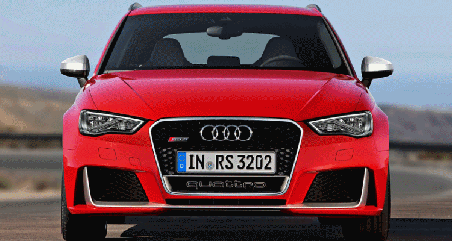

- Tipo de motor: Motor de gasolina, 5 cilindros en línea, turboalimentado.
- Cilindrada: 2.5 litros (2,480 cc).
- Potencia máxima: 367 CV a 5,500-6,800 rpm.
- Tracción quattro: El sistema de tracción integral permanente proporciona un agarre excepcional en todo tipo de condiciones.
- Tipo de carrocería: Hatchback de 5 puertas.
- Sistema ABS, ESC (control de estabilidad) y sistema de frenada deportiva.
- Aceleración (0-100 km/h): 4.3 segundos.